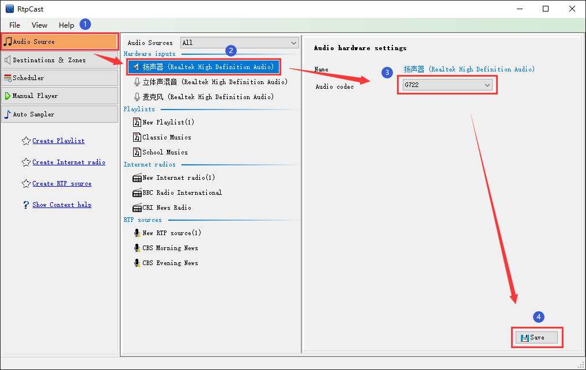

|  |
|
Introduction |
|
According to the interface information of your computer soundcard, take the relevant audio equipment as the hardware input of the system. Its advantages: "make full use of the user's computer resources (e.g. by connecting a microphone to shout, a audio mixer or using a third-party standard audio player to play audio files in various local coding formats) to realize broadcasting without the limitation of audio source format". |
|
Operation |
| (1) Click the hardware input sub item (e.g. speaker) and select the coding format in the right setting panel (only G711a, G711u and G722). |
| (2) Click [Save] to save the configuration parameters. |